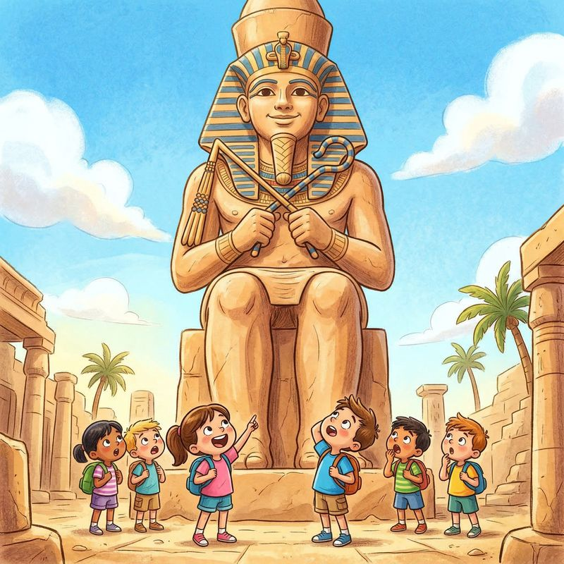
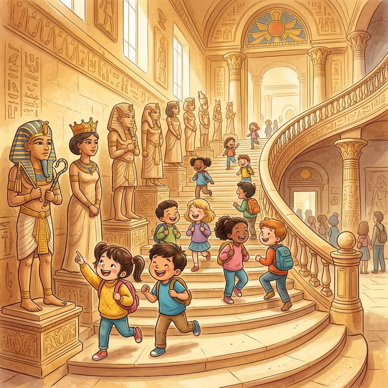
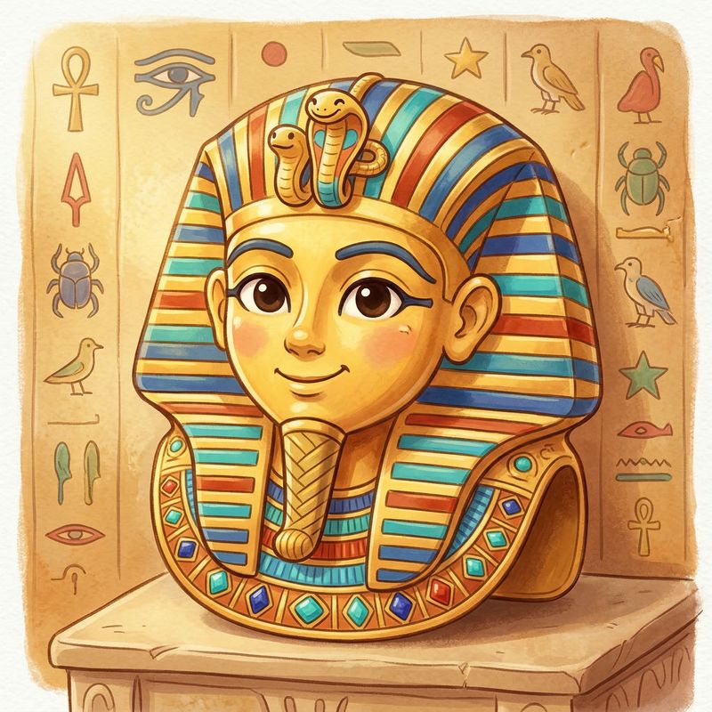
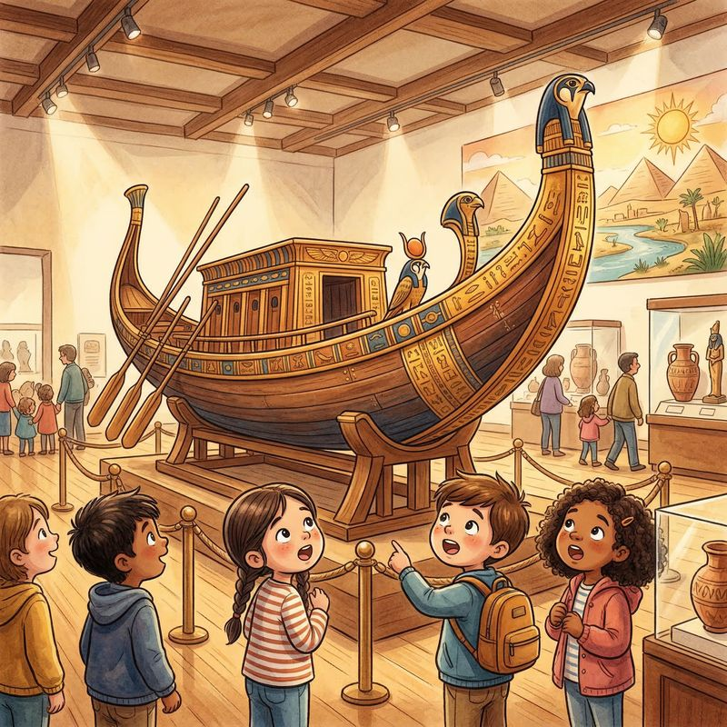
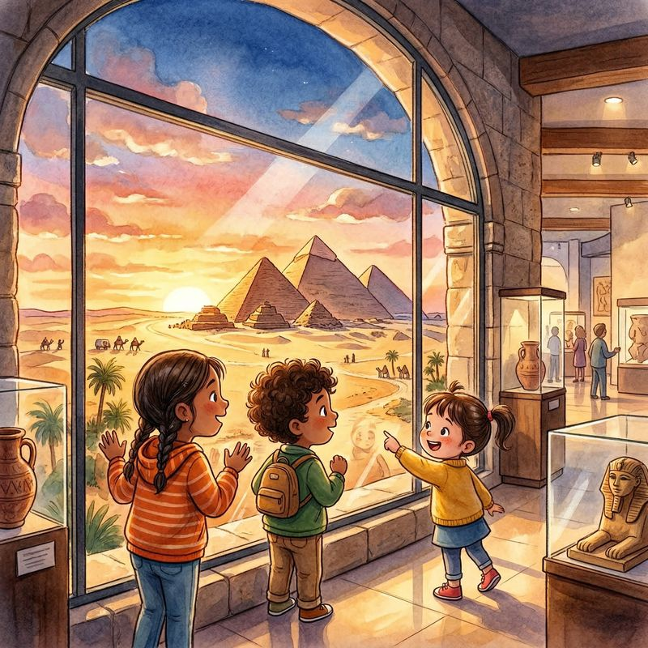
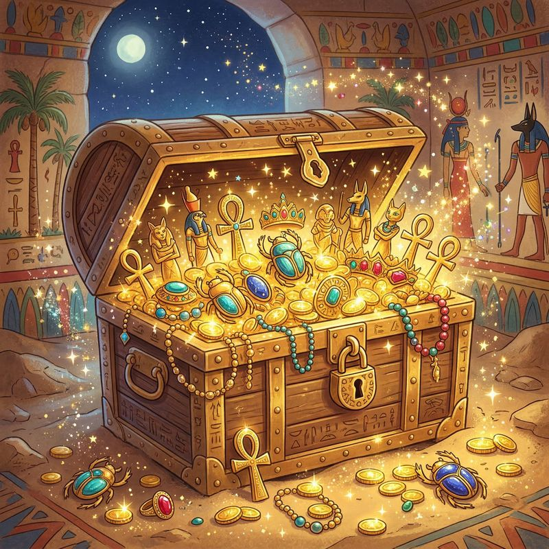

Кошка Бастет потеряла 7 волшебных сокровищ по всему музею. Помоги ей найти их все и разгадать тайну фараонов!
30-45 минут7 заданий3-6 лет
Задание 1 из 7

Великан у входа
Большой зал (вход в музей)
Бастет говорит: «Когда вы войдёте в музей, вас встретит ОГРОМНЫЙ каменный великан! Это статуя фараона Рамзеса II. Ему больше 3000 лет!»
Что нужно сделать:
Найдите гигантскую статую Рамзеса II в Большом зале
Встаньте рядом и попробуйте дотянуться до его колена — получится?
Посчитайте: сколько пальцев на одной руке статуи?
А ты знал?
Эта статуя высотой 11 метров — это как дом в 4 этажа! А весит она как 90 автомобилей!
Из какого камня сделана статуя?
Задание 2 из 7
Летающий камень
Площадь перед входом
Бастет шепчет: «Посмотрите наверх! Видите огромный каменный столб, который ВИСИТ в воздухе? Это обелиск фараона Рамзеса II. Египтяне подвесили его специально для этого музея!»
Что нужно сделать:
Найдите висящий обелиск на площади перед входом
Пройдите прямо под ним и посмотрите наверх
Найдите на подставке слово «Египет» — оно написано на разных языках!
А ты знал?
Это первый подвешенный обелиск в Египте! Обычно они стоят на земле, а этот парит в воздухе, как по волшебству!
Что написано на обелиске?
Задание 3 из 7

Лестница королей
Большая лестница
Бастет радуется: «Теперь поднимемся по самой красивой лестнице в мире! Вдоль неё стоят статуи древних царей и цариц. Они охраняют путь наверх уже тысячи лет!»
Что нужно сделать:
Поднимитесь по Большой лестнице
Найдите статую, у которой на голове корона в виде двух перьев
Попробуйте встать в такую же позу, как одна из статуй!
А ты знал?
У египетских фараонов было две короны: белая — Верхнего Египта и красная — Нижнего. А когда фараон правил всем Египтом, он носил обе сразу!
Кого ещё, кроме царей, можно увидеть среди статуй на лестнице?
Задание 4 из 7

Золотая маска
Галереи Тутанхамона
Бастет затаила дыхание: «Это самое главное сокровище музея! Золотая маска молодого фараона Тутанхамона. Она сделана из чистого золота и весит 11 килограмм!»
Что нужно сделать:
Найдите знаменитую золотую маску Тутанхамона
Посмотрите: какое животное у фараона на лбу? (Подсказка: оно шипит!)
Рассмотрите полоски на головном уборе — какого они цвета?
А ты знал?
Тутанхамон стал фараоном, когда ему было всего 9 лет — он был почти как вы! А его гробницу нашли только 100 лет назад, и там было больше 5000 сокровищ!
Какое животное изображено на лбу маски?
Задание 5 из 7

Корабль фараона
Музей Солнечной ладьи Хуфу
Бастет удивляется: «Вау! Посмотрите на этот огромный деревянный корабль! Ему 4600 лет! Египтяне верили, что на нём фараон Хуфу плавает по небу вместе с богом солнца Ра!»
Что нужно сделать:
Найдите Солнечную ладью фараона Хуфу
Попробуйте сосчитать, сколько вёсел у ладьи
Представьте, что вы плывёте по реке Нил — куда бы вы поплыли?
А ты знал?
Эта лодка длиной 43 метра — это как половина футбольного поля! Её нашли закопанной рядом с Великой пирамидой, разобранной на 1224 части, как огромный пазл!
Из чего сделана ладья?
Задание 6 из 7

Окно в прошлое
Верхний этаж (панорамное окно)
Бастет подмигивает: «Поднимитесь на верхний этаж и найдите большое окно. Оттуда видно настоящие пирамиды Гизы! Это одно из семи чудес древнего мира — и единственное, которое сохранилось!»
Что нужно сделать:
Найдите панорамное окно с видом на пирамиды
Сосчитайте, сколько пирамид вы видите
Какая из них самая большая? Покажите на неё!
А ты знал?
Самая большая — пирамида Хуфу. Она была самым высоким зданием в мире почти 4000 лет! Чтобы её построить, понадобилось 2 миллиона каменных блоков!
Сколько больших пирамид стоит в Гизе?
Задание 7 из 7
Охота на скарабея
Любые галереи музея
Бастет просит: «Последнее задание! Скарабей — это священный жук-талисман египтян. Они верили, что он приносит удачу. В музее скарабеи повсюду — на украшениях, на саркофагах, на стенах!»
Что нужно сделать:
Найдите в залах музея 3 изображения жука-скарабея
Где вы их нашли? На украшении? На стене? На саркофаге?
Покажите взрослым, когда найдёте!
А ты знал?
Египтяне верили, что скарабей катит солнце по небу, как настоящий жук катит свой шарик! Поэтому его считали символом солнца и новой жизни.
Что скарабей символизировал для древних египтян?

Поздравляем, исследователи!
Вы нашли все 7 сокровищ Бастет и разгадали тайны Большого Египетского музея!